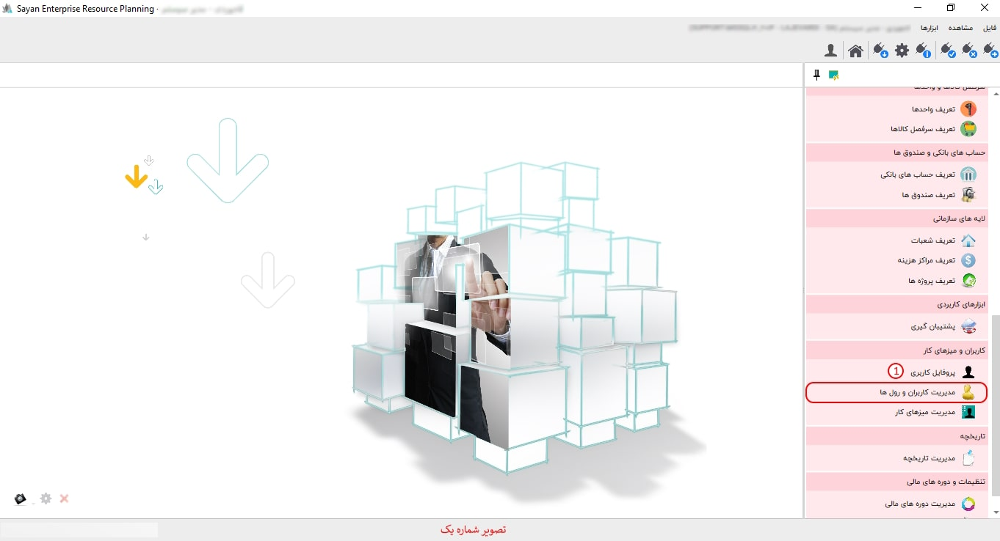
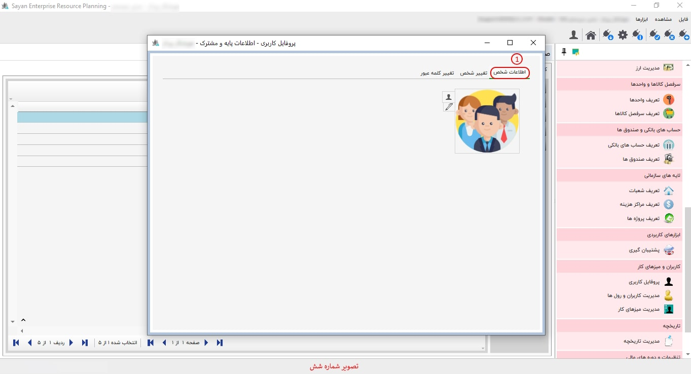

برای اعمال تنظیمات «مدیریت کاربران و رولها»، ابتدا بر روی دکمه «تنظیم کاربران» کلیک کنید. در این صفحه، گزینههایی برای نمایش و انتخاب «انواع رولها» وجود دارد. شما میتوانید بر اساس نیاز خود، رولهای کاربری مورد نظر را انتخاب کنید.

برای ادامه مطلب به تصویر شماره دو مراجعه نمایید.

-کاربران (کادر شماره یک): این بخش به شما این امکان را میدهد که کاربران مورد نظر خود را تعریف کرده، در صورت نیاز آنها را ویرایش کنید و همچنین آنها را مشاهده نمایید.
-تنظیم گروهها (کادر شماره دو): این بخش به شما این امکان را میدهد که رول کاربر مورد نظر خود را انتخاب کنید.
-تاریخچه (کادر شماره سه): این بخش به شما این امکان را میدهد که تاریخچه کاربرانی را که ایجاد یا ویرایش شدهاند، مشاهده کنید.
-کلمه عبور (کادر شماره چهار): در این آیتم، از طریق مدیر سیستم، امکان تغییر یا ایجاد کلمه عبور برای کاربران شما فراهم است.
-پروفایل کاربری (کادر شماره پنج): در این بخش، شما میتوانید نام کاربری یا کلمه عبور مورد نظر خود را تغییر دهید.
-کاربر وب (کادر شماره شش): برای استفاده از وبسرویس (API)، کاربران باید دارای دسترسی مشخصی باشند.
-کادر شماره هفت: در این بخش، تمامی کاربرانی که تعریف کردهاید را میتوانید مشاهده کنید.
برای ادامه مطلب به تصویر شماره سه مراجعه نمایید.
-تنظیم گروهها (کادر شماره یک): این بخش به شما این امکان را میدهد که رول کاربر مورد نظر خود را انتخاب کنید.
-کادر شماره دو: در این بخش، میتوانید تیک رول مورد نظر خود را انتخاب کنید.
برای ادامه مطلب به تصویر شماره چهار مراجعه نمایید.

-کادر شماره یک: این بخش به شما این امکان را میدهد که موارد مورد نظر خود را فیلتر کنید و اطلاعات مرتبط و مورد نیازتان را دریافت کنید.
-کادر شماره دو: شما میتوانید از طریق مدیر سیستم، تمامی اطلاعاتی که توسط کاربران ایجاد، ویرایش یا حذف شده است را مشاهده کنید.
برای ادامه مطلب به تصویر شماره پنج مراجعه نمایید.

-کلمه عبور (کادر شماره یک): در این بخش، شما میتوانید کلمه عبور کاربر مورد نظر خود را ایجاد کرده و در صورت نیاز، آن را تغییر دهید.
-تکرار کلمه عبور (کادر شماره دو): در این بخش، شما باید کلمه عبور تغییر یافته را دوباره وارد کنید.
برای ادامه مطلب به تصویر شماره شش مراجعه نمایید.
-اطلاعات اشخاص (کادر شماره یک): در این قسمت، اطلاعات شخصی کاربر مورد نظر خود را وارد نمایید.
برای ادامه مطلب به تصویر شماره هفت مراجعه نمایید.

-تغییر شخص (کادر شماره یک): این بخش به شما امکان میدهد که کاربر مورد نظر خود را تغییر دهید.
-شخص (کادر شماره یک): در این بخش میتوانید شخص مورد نظر خود را ایجاد کرده و در صورت نیاز، آن را تغییر دهید.
برای ادامه مطلب به تصویر شماره هشت مراجعه نمایید.

-آدرس ایمیل (کادر شماره یک): در این قسمت، میبایست آدرس ایمیل کاربر مورد نظر خود را وارد کنید.
-تلفن همراه (کادر شماره دو): در این قسمت، میبایست تلفن همراه کاربر مورد نظر خود را وارد نمایید.
برای ادامه مطلب به تصویر شماره نهم مراجعه نمایید.

-رولهای کاربری (کادر شماره یک): در این بخش، میتوانید رولهای کاربری مورد نیاز خود را تعریف کرده و در صورت نیاز، آنها را ویرایش یا مشاهده نمایید.
-کادر شماره دو: در این بخش، میتوانید رولهای کاربری ایجاد شده خود را مشاهده کنید.
برای ادامه مطلب به تصویر شماره ده مراجعه نمایید.
-مدیر مالی (کادر شماره یک): در این بخش، شما میتوانید تیک رول مورد نظر خود را انتخاب کنید.